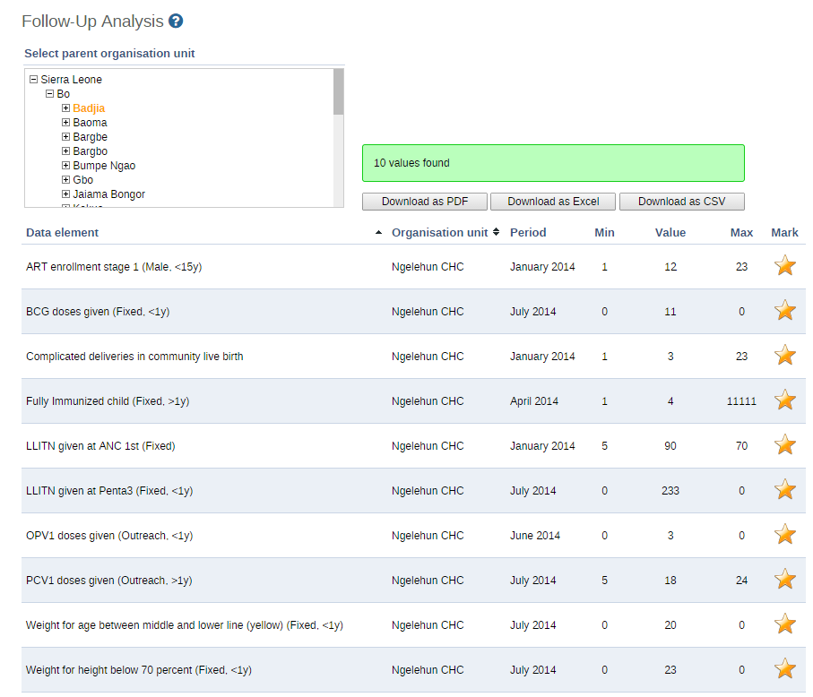

The follow-up analysis creates a list of all data values marked for follow-up. You can mark a data value for follow-up in the Data Entry app and in the result list you get from a standard deviation outlier or minimum maximum outlier analysis.
-
Open the Data Quality app and click Follow-up analysis.
-
Select an Organisation unit.
The analysis process duration depends on the amount of data that is being analysed. If there are data values marked for follow-up, they will be presented in a list.
 -
(Optional) Click Download as PDF, Download as Excel or Download as CSV to download the validation violations list in PDF, Excel or CSV formats.
![[Tip]](../Resources/tip.png)
|
Tip |
|---|---|
|
Click the star icon to remove the follow-up tag from the data value. |